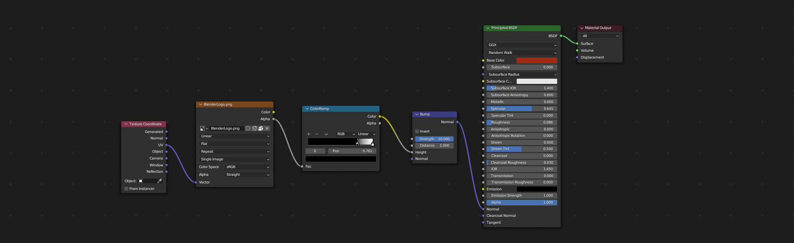

Session #4
Texturing Workshop Session
We will focus on creating, customizing, and applying procedural textures. Furthermore, we will explore the use of simple mapped image textures to understand how they work. After covering texturing, we will proceed to set up the scene to create a visually appealing rendering.
Comparing Procedural and Mapped Textures
Procedurally Generated Textures:
- Instant Tweaks
- Can be animated
- Generally take up less space
- Can be Tedious
Mapped Textures (UV or Projected)
- Render efficiently
- Transport between applications
- Offers more control
- More widely used
Setting up our workspace for texturing
- Window splits
- Changing workspaces
- Downloading resource files
- Creating blank textures
Building our first procedural texture
We will start building our first procedural texture for our red dipped wax.

Building our second procedural texture in combination with our first mapped texture

Building our third procedural texture

Building our fourth procedural texture

{kind=link}
{kind=link}
{kind=link}
{kind=link}